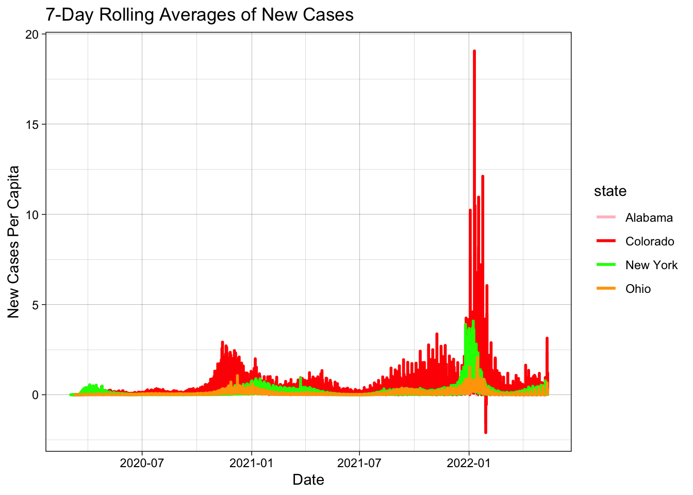

Rows: 2502832 Columns: 6
── Column specification ────────────────────────────────────────────────────────
Delimiter: ","
chr (3): county, state, fips
dbl (2): cases, deaths
date (1): date
ℹ Use `spec()` to retrieve the full column specification for this data.
ℹ Specify the column types or set `show_col_types = FALSE` to quiet this message.
### access to this data helps us understand trends over time so we can be better prepared for future scenarios### if this data becomes inaccessible we lose a huge source of information which would be essential in## the future to inform decisions, policy, etc.
#######perCap |>select(County = county, Cases = percapitaCumulative) |>slice_max(Cases, n=5) |>flextable() |>set_caption(caption ="Most Cumulative Cases Per Capita")
County
Cases
Crowley
0.5117698
Bent
0.4118749
Pitkin
0.3429659
Lincoln
0.3424082
Logan
0.3047701
perCap |>select(County = county, Cases = newCasesPerCap) |>slice_max(Cases, n=5) |>flextable() |>set_caption(caption ="Most New Cases Per Capita")
County
Cases
Crowley
0.009764603
Bent
0.004120622
Sedgwick
0.003869304
Washington
0.002875924
Las Animas
0.002651039
###### the data has 3144 observations and 19 variables##### fips, state name, city name, population estimate 2021, N population change 2021,#### births 2021, deaths 2021, natural change 2021, international migration 2021, domestic migration 2021, ### net migration 2021, residual 2021, GQ estimate 2021, r births 2021, r death 2021, r natural change 2021,## r international migration 2021, r domestic change 2021, r net migration, 2021####
### Question 4safe <- population2 |>inner_join(colorado, by ="fips") |>filter(between(date, today.date -13, today.date)) |>group_by(county) |>summarize(lag =sum(new_cases)/(POPESTIMATE2021[1]/100000)) |>ungroup()safe |>select(County = county, Cases = lag) |>slice_max(Cases, n =5) |>flextable() |>set_caption(caption ="New Cases in the last 14 Days (per 100,000 people)")
Warning in inner_join(state_covid, population2, by = "state"): Detected an unexpected many-to-many relationship between `x` and `y`.
ℹ Row 1 of `x` matches multiple rows in `y`.
ℹ Row 1831 of `y` matches multiple rows in `x`.
ℹ If a many-to-many relationship is expected, set `relationship =
"many-to-many"` to silence this warning.
Warning in inner_join(state_covid, population2, by = "state"): Detected an unexpected many-to-many relationship between `x` and `y`.
ℹ Row 1 of `x` matches multiple rows in `y`.
ℹ Row 1831 of `y` matches multiple rows in `x`.
ℹ If a many-to-many relationship is expected, set `relationship =
"many-to-many"` to silence this warning.
perCapNewCasesRoll2 = state_capita2 |>group_by(date, state) |>filter(state %in%c("New York", "Ohio", "Colorado", "Alabama")) |>group_by(state) |>mutate(newnewCasesPerCap =mean(sum(newCasesPerCap)),roll = zoo::rollmean(newCasesPerCap, k =7, align ="right", fill =NA)) |>ungroup()perCapNewCasesRoll2 <- perCapNewCasesRoll2 |>select(-CTYNAME)ggplot(perCapNewCasesRoll2, aes(x = date)) +geom_line(aes(y = roll, color = state), size =1) +theme_linedraw() +scale_color_manual(values =c("pink", "red", "green", "orange")) +labs(title ="7-Day Rolling Averages of New Cases", x ="Date", y ="New Cases Per Capita")
Warning: Removed 305 rows containing missing values or values outside the scale range
(`geom_line()`).

##### The firstplots show New York with the highest number of cases ##### significantly over 750,000, higher than any of the other states####### The plot of 7-day rolling means shows Colorado with the highest case numbers (in red in the plot)
Rows: 3221 Columns: 3
── Column specification ────────────────────────────────────────────────────────
Delimiter: ","
chr (1): fips
dbl (2): LON, LAT
ℹ Use `spec()` to retrieve the full column specification for this data.
ℹ Specify the column types or set `show_col_types = FALSE` to quiet this message.
Joining with `by = join_by(fips)`
####ggplot(spatialdata) +borders("state", fill ="gray90", colour ="white") +geom_point(aes(x = Cases_WeightedMean_x, y = Cases_WeightedMean_y), color ="purple", alpha =0.25) +labs(color ="Month",size ="cases", x ="Longitude", y ="Latitude", title ="Weighted Center of COVID-19 Cases") +theme(legend.position ="none")